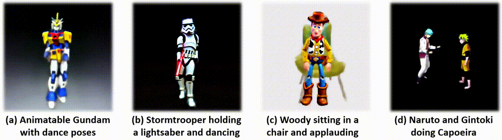
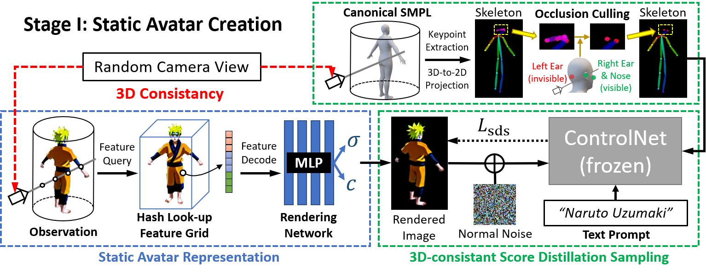
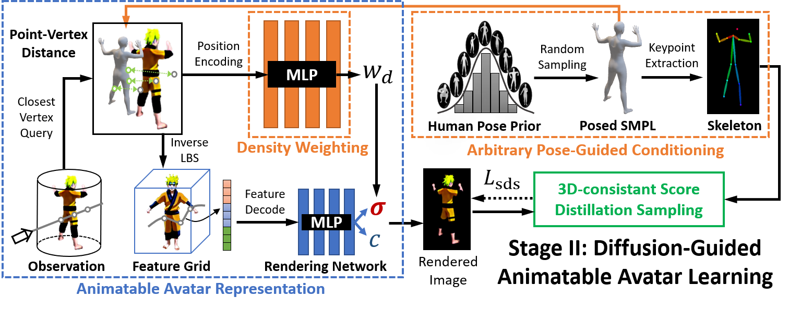

DreamWaltz: Make a Scene with Complex 3D Animatable Avatars
Yukun Huang1,2
Jianan Wang1
Ailing Zeng1
He Cao1
Xianbiao Qi1
Yukai Shi1
Zheng-Jun Zha2
Lei Zhang1
1International Digital Economy Academy
2University of Science and Technology of China
[Paper]
[Code]
[Video]

DreamWaltz focuses on text-driven 3D animatable avatar creation using pretrained 2D diffusion model ControlNet
and human parametric model SMPL, which can (a) create animatable avatars, and (b-d) make a complex 3D scene with diverse interactions
(b) between avatar and object, (c) between avatar and scene, or (d) across avatars.
Abstract
We present DreamWaltz, a novel framework for generating and animating complex 3D avatars given text guidance and parametric human body prior.
While recent methods have shown encouraging results for text-to-3D generation of common objects, creating high-quality and animatable 3D avatars remains challenging.
To create high-quality 3D avatars, DreamWaltz proposes 3D-consistent occlusion-aware Score Distillation Sampling (SDS) to optimize implicit neural representations with canonical poses.
It provides view-aligned supervision via 3D-aware skeleton conditioning which enables complex avatar generation without artifacts and multiple faces.
For animation, our method learns an animatable and generalizable avatar representation which could map arbitrary poses to the canonical pose representation.
Extensive evaluations demonstrate that DreamWaltz is an effective and robust approach for creating 3D avatars that can take on complex shapes and appearances as well as novel poses for animation.
The proposed framework further enables the creation of complex scenes with diverse compositions, including avatar-avatar, avatar-object and avatar-scene interactions.
Approach
DreamWaltz is a two-stage framework for static and animatable avatar creation. Figure (a) shows how to create a static avatar,
and Figure (b) demonstrates how to learn an animatable avatar.

(a) Static Avatar Creation. In each iteration, the same camera view is used to render the 3D avatar and the canonical SMPL mesh,
resulting in rendered image and skeleton, respectively. ControlNet conditioned on the text prompt and the skeleton provides view-consistent
score distillation gradients for 3D avatar genertion.

(b) Animatable Avatar Learning. In each iteration, we sample a SMPL mesh of random pose to drive 3D avatar and
condition ControlNet simultaneously, enabling pose-consistent score distillation. A generalizable density weighting module is introduced to refine
vertex-based pose transformation for animation of complex avatars.
Static Avatars
Given only a textual description, DreamWaltz can generate the corresponding canonical 3D avatar in an hour,
without the limitation of multiple faces or skin-tight appearances.
Animatable Avatars
Given motion sequences, DreamWaltz can animate 3D avatars and produce 3D-aware videos without re-training.
Complex Scenes
DreamWaltz is able to make scenes with animatable avatars and diverse interactions, including:
avatar-object, avatar-scene, and avatar-avatar interactions.
Avatar-Object Interaction
Avatar-Scene Interaction
Avatar-Avatar Interaction